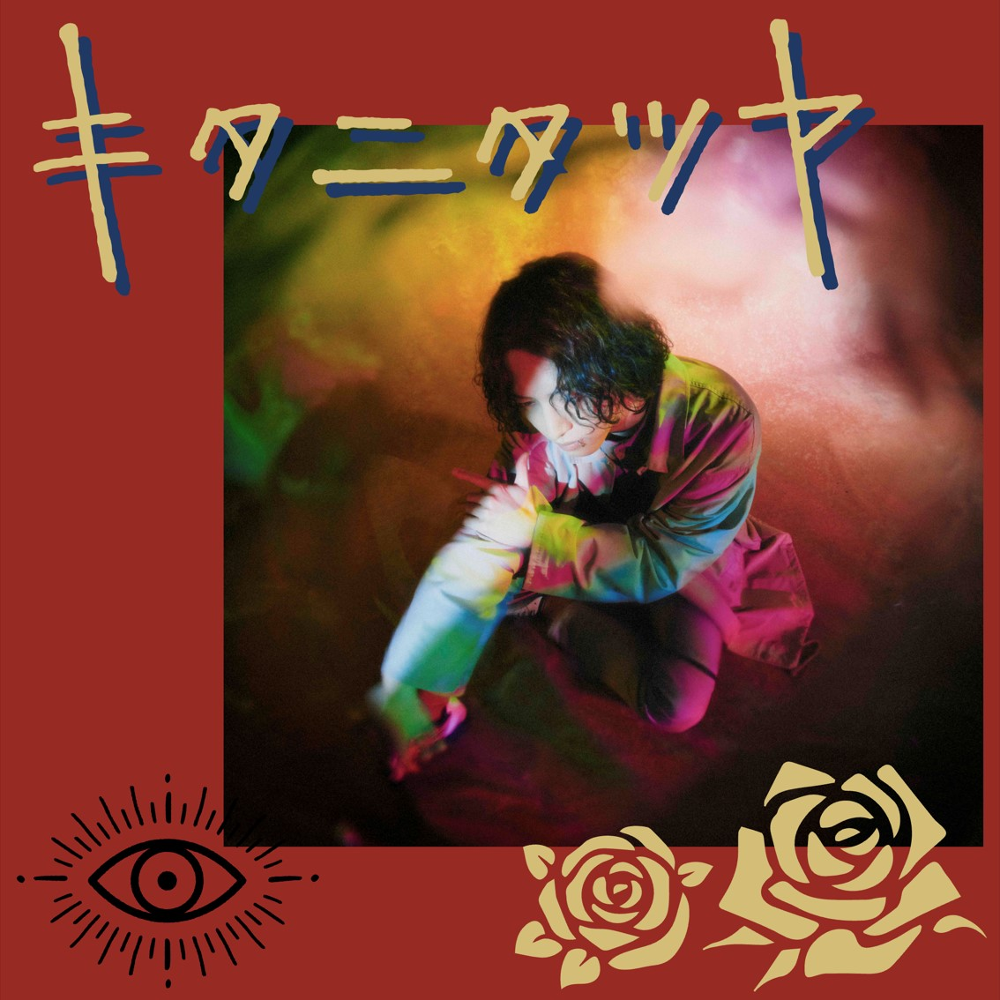

News
お知らせ
-
2021.11/18情報解禁
展示企画ページを公開！
-
2021.11/17トピック
第72回新宿祭ステージ企画タイムスケジュールを公開！
-
2021.11/15情報解禁
学生プロジェクト展示のページを公開！
-
2021.11/14お知らせ
オリジナルラーメン発売決定！
-
2021.11/7メディア
新宿祭CMが八王子駅前シティービジョンで公開開始！
-
2021.11/1情報解禁
新宿祭の出演アーティスト解禁！
-
2021.10/28お知らせ
Webサイトを大幅アップデートしました。
-
2021.10/15トピック
新宿祭イメージキャラクター『こんじゅ』衣替え♪
-
2021.10/4メディア
公式YouTubeチャンネルを開設しました。
-
2021.4/1お知らせ
新宿祭開催日決定！

Contents
おすすめコンテンツ
-

オンラインコンテンツ
第73回新宿祭はオンラインでも!!
Check!
公式YouTubeチャンネルで
オリジナル動画が随時更新!
チャンネル登録 & 通知登録がおすすめ! -

ステージ企画
メインステージでは3日間にわたって
Check!
たくさんの企画が盛りだくさん！
途中参加も大歓迎！！！
新宿祭を存分に楽しもう！ -
マスコットキャラクター
「絵本」がテーマ
Check!
〇八王子祭『ぽんはち』
「和」がテーマ
〇新宿祭『こんじゅ』 -

展示企画
委員会・体育会クラブ・文化会クラブ
Check!
学生プロジェクト・サークルなど
たくさんの団体が教室展示を実施中！
思考を凝らした展示を刮目せよ！ -

アーティストライブ
キタニタツヤ
Check!
有観客開催(※学内生のみ)：11月19日(金)
オンライン開催(一般)：12月5日(日)
-

メインポスターデザインコンテスト
第73回新宿祭ポスターの
Check!
デザインを学内生から募集しました！
応募作品を全て公開！！
詳細は下のボタンから↓
Access
アクセス
工学院大学新宿キャンパス
東京都新宿区西新宿1丁目24番2号
JR「新宿駅」下車、西口より徒歩5分
京王線、小田急線、地下鉄各線「新宿駅」下車、徒歩5分
都営大江戸線「都庁前駅」下車、徒歩3分
西武新宿線「西武新宿駅」下車、徒歩10分